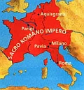

|
Il Sacro Romano Impero ebbe principio la notte di Natale dell'anno 800, quando a Roma Carlo Magno fu incoronato Imperatore da papa Leone III e fu in un certo qual modo "restaurato" l'Impero Romano d'Occidente.
I precedenti di quest'atto solenne furono l'ascesa della dinastia merovingia passata con il suo popolo all'ortodossia cattolica; la gloria conseguita da Carlo Martello sugli Arabi a Poitiers; l'avvento al trono dei Franchi di Pipino il Breve legittimato dall'assenso del papa Zaccaria; la vittoria di Carlo Magno invitato da Stefano II contro i Longobardi e insignito del titolo di patricius, con l'impegno della difesa del "Patrimonio di San Pietro"; i rapporti tra l'Impero bizantino e la Chiesa, per la questione dell'iconoclastìa e la mancata protezione degli Imperatori al papato di fronte ai Longobardi, e, anzi, l'incuria e il malvolere insieme con il desiderio di prevalere sull'autorità pontificia. D'altra parte, pur non essendo definita giuridicamente la decadenza dei possessi Imperiali in Italia, esisteva di fatto nel Ducato romano un territorio amministrato dal papa e l'assenteismo Imperiale dall'Italia e dalle province occidentali durava da tanto tempo da poter sembrare un definitivo abbandono. L'incoronazione romana di Carlo Magno provocò vivissime contestazioni e proteste da parte del governo di Costantinopoli. Allora l'assunzione del titolo Imperiale risolveva per Carlo e per Roma un problema urgente, quello cioè di dare una sistemazione e un fondamento giuridico, corrispondente alle idee del tempo, al potere di Carlo su Roma, e al distacco di Roma dall'Imperatore di Costantinopoli.
Carlo, cui non mancavano fermezza, chiarezza di intuizione e doti di grande uomo di Stato, forse non avrebbe voluto l'incoronazione per mano del pontefice, per non far apparire il suo potere Imperiale come dipendente dall'autorità della Chiesa. In realtà l'Impero sorgeva, a questo modo, gravato da un fondamentale equivoco: se l'Impero doveva essere continuazione o ripristino dell'Impero Romano, l'Imperatore doveva essere il vero sovrano di Roma e quindi sovrano temporale anche del pontefice; però riceveva dal papa la sua dignità, per cui proprio il papa si costituiva, se non come autore dell'Impero, almeno dispensatore e controllore della sua esistenza. Il nuovo Impero d'Occidente portava dall'atto stesso della sua costituzione il germe dei futuri e gravi contrasti tra papato e Impero per la direzione suprema della società cristiana. Tutti questi problemi avrebbero dato luogo alle lotte per le investiture, alle quali è stato dedicato un capitolo a parte.

Inerente al titolo di Imperatori romani, portato da Carlo e dai successori, era la pretesa all'universalità, insita anche nel titolo degli Imperatori di Costantinopoli. Da queste opposte pretese derivarono gravi contrasti fra il nuovo Impero d'Occidente e quello d'Oriente, che si affermava solo legittimo continuatore dell'antico Impero Romano. Solo nell'812 Carlo fu riconosciuto come Imperatore dal "collega" bizantino. D'altra parte restava indeterminata la condizione politica in cui venivano a trovarsi reciprocamente gli Imperatori del Sacro Romano Impero e gli altri sovrani degli Stati dell'Occidente europeo che non potevano avere il titolo Imperiale, riservato ad un solo sovrano. Non si sapeva definire con chiarezza se, ed entro quali limiti, i vari sovrani dovessero considerarsi dipendenti dall'Imperatore, mentre una forma di dipendenza era affermata dal concetto universale dell'Impero.
Se Carlo Magno ebbe il titolo Imperiale a Roma nell'anno 800, l'Impero effettivo era territorialmente già costituito dal Danubio e dall'Elba all'Ebro. In questo vasto Impero Carlo fece proclamare co-reggente ad Aquisgrana il figlio Ludovico che gli successe nell'814; Stefano IV, successore di Leone III, fu consacrato papa a Roma senza attendere il consenso del nuovo Imperatore, successo in questa prerogativa all'Imperatore di Costantinopoli; contrariamente al chiaro volere paterno, Ludovico si fece incoronare da Stefano IV che si era recato in Francia. Il primogenito di Ludovico, Lotario, fu proclamato in assemblea ad Aquisgrana coreggente e consacrato Imperatore; ma egli si lasciò reincoronare a Roma dal pontefice Pasquale I. Tuttavia Lotario volle riaffermare l'autorità dell'Impero su Roma con la Constitutio romana dell'824 che riaffermava l'obbligo del giuramento di fedeltà all'Imperatore sia per il popolo, sia per il papa prima della consacrazione.
Lotario successe all'Impero, e conservò la dignità Imperiale con il possesso dell'Italia e di una lunga striscia di territori dalle Alpi al mare del Nord dopo la pace di Verdun. Intanto anche Sergio II fu eletto e consacrato senza curarsi di attendere l'approvazione dell'Imperatore. Lotario affidò l'Italia al figlio maggiore Ludovico II, che venne incoronato Imperatore dal papa Leone IV.
Lotario, morendo, lasciò a Ludovico l'Italia: delle tre parti sorte dall'Impero unitario di Carlo Magno, la più debole era il Regno d'Italia, al quale però restava sempre collegato il titolo Imperiale. Intanto fra le lotte civili e la riottosità dei feudatari da una parte, e l'energica affermazione dell'autorità del pontificato romano dall'altra, declinava l'autorità Imperiale. Nonostante la designazione esplicita dell'Imperatore Ludovico II a favore di un figlio di Ludovico il Germanico, il papa Giovanni VIII invitò Carlo il Calvo ad assumere la corona Imperiale. Mentre nelle incoronazioni Imperiali precedenti il papa ne era stato strumento, con Giovanni VIII, respinta la designazione dinastica, il papa diventava il vero creatore dell'Imperatore. Il prestigio Imperiale, sebbene Carlo il Grosso (incoronato re d'Italia e poi Imperatore nell'881) fosse l'ultimo Imperatore carolingio ad aver riunito tutti i territori di Carlo Magno, era tanto decaduto che i feudatari deponendolo gli sostituirono Arnolfo di Carinzia (888), che venne poi incoronato dal papa Formoso (896).
Dopo la deposizione di Carlo il Grosso, con l'elezione a re di Germania di Arnolfo di Carinzia, che solo in linea secondaria si collegava al ceppo carolingio, si iniziava il trasferimento della corona Imperiale ai prìncipi germanici. Arnolfo affermò il principio della sua superiorità come erede dei Carolingi e come rappresentante dell'idea Imperiale, ottenendo l'omaggio dei nuovi re affermatisi nella Borgogna, nella Provenza, in Italia, dove Berengario, marchese del Friuli, pure discendente collaterale dai Carolingi, si era fatto incoronare re.
Contro Berengario sorse Guido, duca di Spoleto, lo vinse alla Trebbia (889) e si fece a sua volta incoronare re a Pavia; poi si fece riconoscere come associato al trono il figlio Lamberto; quindi si fece incoronare Imperatore a Roma dal papa Stefano V (891) e infine fece incoronare il figlio dal nuovo papa Formoso. In questo modo la famiglia di Spoleto associava al Regno d'Italia l'Impero e si contrapponeva su questo piano alle pretese di Arnolfo. Alla morte di Guido e di Lamberto, Berengario fu riconosciuto unico re d'Italia; ma presto i riottosi signori d'Italia suscitarono contro di lui Ludovico, re di Provenza, che ebbe a Pavia la corona di re d'Italia (900) e a Roma la corona Imperiale (901). Non sostenuto dai suoi fautori, Ludovico si ritirò oltralpe e Berengario poté farsi incoronare Imperatore a Roma dal papa Giovanni X. A sua volta Ugo di Provenza chiamato da feudatari italiani fu incoronato re a Pavia (926) e per qualche tempo ebbe sorte migliore dei suoi predecessori; ma non riuscì ad avere la corona Imperiale, ed ebbe contro di sé Berengario II, duca di Ivrea, il quale, sfuggendo alle insidie di Ugo, riparò presso Ottone I di Sassonia, re di Germania, di cui si fece vassallo, e con l'aiuto del quale nel 950 fu eletto e incoronato in Pavia re d'Italia insieme con il figlio Adalberto.
In queste lotte civili la corona Imperiale si era ridotta a poco più che un semplice titolo onorifico, senza accrescimento di prestigio, né di giurisdizione per chi conseguiva l'incoronazione. Tuttavia in Italia l'idea Imperiale non era morta; essa continuava a vivere nello spirito dei prìncipi che se la contendevano, nel cuore delle popolazioni che desideravano la comparsa di un nuovo Carlo Magno, il quale, restaurando l'Impero in Roma, assicurasse un nuovo periodo di pace e di giustizia.
Con la morte di Arnolfo (899), succeduto il figlio Ludovico il Fanciullo, il regno cadde nell'anarchia con la formazione di vari ducati, e non si pensò da nessuno all'incoronazione Imperiale. Ludovico fu l'ultimo dei Carolingi tedeschi e alla sua morte (911) da un'assemblea di laici ed ecclesiastici fu eletto re il duca di Franconia Corrado I, che designò suo successore Enrico I duca di Sassonia (919-936). Con la scelta di un principe sassone aveva termine anche il carattere franco del regno, e con Enrico I si può dire che si costituì definitivamente il regno germanico con carattere suo proprio. Così si iniziò la Casa di Sassonia e si affermò a un tempo il principio di ereditarietà; infatti Enrico, con il consenso di un'assemblea di signori, designò come successore il figlio Ottone I (936-973); Ottone II venne associato dal padre nel regno (973-983); Ottone III ancora bambino venne designato, vivente il padre, come successore (983-1002).
Ottone I il Grande, contro le mire di potere di Berengario, discese due volte in Italia. La prima volta nel settembre del 951 costrinse Berengario a riconoscersi suo vassallo, assunse a Pavia il titolo di re dei Longobardi e sposò Adelaide vedova di Lotario, figlio di Ugo di Provenza. Così il Regno d'Italia diveniva subordinato al Regno tedesco. Richiamato in Italia contro le violenze rinnovate da Berengario, si recò a Roma, ove il 2 febbraio 962 ricevette la corona Imperiale dal papa Giovanni XII. Così, accanto all'unione della Germania e dell'Italia, sia pure di carattere personale, si stabiliva l'unione fra la corona di Germania e la corona Imperiale, costituendo il cosiddetto Sacro Romano Impero della Nazione Germanica (in tedesco: "Heiliges Römisches Reich Deutscher Nation").
Per raggiungere i suoi intenti, Ottone aveva adottato verso la Chiesa la politica già seguita dai Carolingi, concedendo favori e privilegi ai vescovi, facendosene sostegno al suo assolutismo contro i feudatari, e facendo giuramento al papa di proteggere la Chiesa e di restituirle quanto del patrimonio di San Pietro fosse in suo potere. Al rinnovarsi, nell'anno 962, della cerimonia dell'incoronazione influirono e operarono ancora non solo l'idea dell'Impero tuttora viva, ma anche il bisogno universalmente sentito di una pace sicura, il desiderio dei pontefici di avere un protettore della religione cristiana e di Santa Romana Chiesa, l'avvenuto distacco dell'Italia e del papato dall'Oriente.
Pareva rinato l'Impero di Carlo Magno, ma in realtà il nuovo Impero differiva alquanto da quello scomparso da oltre mezzo secolo. Anzitutto i suoi limiti territoriali erano assai più ristretti, mancandogli il vasto territorio della monarchia franca; e poi l'unità cristiana compiuta da Carlo Magno non era più possibile nel X secolo già ricco di attività politiche disparate, non più rassegnate a convivere insieme in un'unità; i sovrani di Francia, rinnovato lo Stato dopo la decadenza carolingia, difficilmente potevano riconoscere la sovranità Imperiale di un sovrano tedesco. Soltanto Germania e Italia formavano la base territoriale dell'Impero di Ottone, e solo più tardi si sarebbe associato a questo complesso il Regno di Borgogna, (secolo XI).
Dopo l'incoronazione del 2 febbraio Ottone si affrettò a definire i rapporti fra Stato e Chiesa mediante un accordo con Giovanni XII, con il quale, mentre riconosceva la legittimità del dominio temporale pontificio sotto la protezione Imperiale, affermava la superiorità dell'Imperatore verso il pontefice. Il diploma emanato da Ottone il 13 Febbraio (Privilegium Othonis) rimetteva in vigore le disposizioni dell'Imperatore Lotario dell'824, stabilendo che il papa prima di essere consacrato doveva prestare giuramento di fedeltà all'Imperatore. La dipendenza della Chiesa dall'Impero era rafforzata con la politica dei vescovi-conti, investiti cioè del feudo e nominati dall'Imperatore. La politica degli Ottoni si svolse su questa linea; ma Ottone III, che ebbe un'idea altissima dell'Impero, finì con l'utopia dell'universalità dell'Impero romano e cristiano sotto il concorde governo del papa e dell'Imperatore.
L'anno 1046, in cui Enrico III intervenne a deporre tre papi, e come patrizio dei Romani elesse un nuovo papa, tedesco, fu il momento della più esplicita supremazia dell'Impero. In realtà il dissidio fra i due poteri insito nella creazione di Carlo Magno restava irriducibile, e scoppiò violento sotto la dinastia di Franconia fra Enrico IV e Gregorio VII con la lotta per le investiture. L'episodio di Canossa segnò l'avvilimento dell'Imperatore e il trionfo del papato. Il regno di Germania fu teoricamente elettivo; ma in pratica si delineava l'ereditarietà del potere, poiché poteva essere imposto dalle famiglie predominanti. Ma il re eletto soltanto in Germania poteva elevarsi alla dignità di Imperatore. Negli altri paesi, Italia e Borgogna, si rivelò essere un corpo amministrativo spesso estraneo alle esigenze e ai desideri della popolazione autòctona. In più le elezioni Imperiali erano limitate ad una ristretta cerchia di prìncipi elettori, (detti in tedesco "Kurfürsten").
Così gli Imperatori appartennero a poche dinastìe, ovviamente sempre tedesche: Sassonia (Sachsen), Franconia (Franken), Svevia (Hohenstaufen o Staufer), Absburgo (Habsburg), Lorenese (Lothringen). Le elezioni a re di Germania e futuro Imperatore avvennero senza regole fisse e osservate dalle diete o assemblee a cui dapprima potettero partecipare tutti i feudatari laici ed ecclesiastici. Ma il diritto elettorale venne restringendosi, tanto che nel secolo XII emersero fra gli elettori i prìncipi, ossia i signori feudali che dipendevano direttamente dalla corona. In seguito il diritto elettorale si restrinse ancora ai pochi prìncipi che occupavano le alte cariche della corte. Durante l'interregno che seguì alla fine della Casa Sveva, incominciò a definirsi meglio la teoria degli elettori, per cui troviamo nominati i tre arcivescovi renani di Magonza, di Colonia, di Treviri, insieme al conte Palatino del Reno (Rheinpfalz), con il duca di Sassonia e il margravio di Brandenburgo; qualche fonte parla del re di Boemia, sul quale si discuteva perché non era tedesco. Le discussioni sul numero e sui diritti degli elettori continuarono fino a quando Carlo IV di Lussemburgo, per evitare ogni futura pretesa papale di controllare l'elezione Imperiale, le diede una organizzazione definitiva mediante la "Bolla d'oro" del 1356. Con questa costituzione stabilì che l'elezione dei re di Germania (e di Borgogna), e re d'Italia, ossia dei Romani e in quanto tale designato all'Impero, spettava a un collegio di sette elettori: tre ecclesiastici, cioè gli arcivescovi di Treviri, Magonza e Colonia, e quattro laici, cioè il re di Boemia, il conte del Palatinato renano, il duca di Sassonia, il margravio di Brandenburgo. Durante la vacanza dell'Impero la reggenza era affidata al conte Palatino e al duca di Sassonia; al papa era riservato l'onore di incoronare il principe eletto dal collegio elettorale a maggioranza. Sebbene l'Impero apparisse ancora come la fonte giuridica di ogni autorità anche in Italia, le venute in Italia degli Imperatori da Enrico VII a Ludovico il Bavaro, a Carlo IV, a Massimiliano, dimostrarono che l'Impero si era ridotto a un'entità giuridica senza più alcun valore.

Senza dubbio la Casata Sveva con Federico I Barbarossa costituì una forte base in Germania per svolgere una grande azione Imperiale, ispirandosi al risorto diritto romano come fondamento e norma di un potere assoluto. Federico fece valere i diritti regi sulla feudalità laica ed ecclesiastica, impose la sua autorità a vari Stati, tra cui la Boemia, da lui elevata a regno, e cercò di imporla anche ai re di Francia e d'Inghilterra, da lui chiamati "reges provinciarum". Questo programma imperialistico urtò contro gli interessi della Chiesa romana, che tendeva a sviluppare più ampiamente i princìpi teocratici di Gregorio VII, e contro i Comuni, specialmente quando rivendicò il dominio sul Regno d'Italia. La lotta dei Comuni sostenuti da Alessandro III, fu un segno del distacco dell'Italia dalla Germania. La pace di Costanza fu un compromesso che segnò la rinuncia al programma di dominio accentratore di Federico; l'XI Concilio ecumenico in Laterano (marzo 1179) regolò l'elezione del pontefice stabilendo che fosse eletto chi avesse riportato due terzi dei voti del Sacro Collegio (regola tuttora vigente): scompariva così il diritto di conferma Imperiale. La politica Imperiale fu ripresa dal figlio Enrico VI, incoronato re d'Italia a Milano e associato al potere con il titolo di Cesare dal padre, avendo il papa Lucio III rifiutato di incoronare Imperatore Enrico, vivente ancora il padre imperatore. Enrico intendeva dichiarare solennemente che la corona era ereditaria nella sua Casa, ma vi rinunziò per evitare la ribellione dei grandi. L'autorità papale trionfò con Innocenzo III, che concluse solennemente la sua opera varia e grandiosa con il IV Concilio ecumenico lateranense (1215) che sanzionò la supremazia pontificale. Fallì anche la politica di Federico II con la sua concezione politica assolutistica in contrasto con i diritti dei feudatari, con le libertà comunali, con i privilegi della Chiesa, con l'autorità che questa si attribuiva di suprema direttrice di tutta la vita della cristianità.
Dalle lotte secolari tra papato e Impero, culminate con la contrapposizione dei due partiti guelfo e ghibellino, questi due poteri uscirono indeboliti, sebbene in grado diverso; sorto il problema a quale dei due poteri spettasse la supremazia sull'altro, ne derivò la lotta in cui il pontificato romano, forte della sua concezione del dominio religioso apertamente confessata, sostenuto dalla più alta forza spirituale del tempo, quale era la forza religiosa, sostenuta dalle idee riformatrici propugnate dalla riforma di Cluny, riuscì ad avere il sopravvento di fronte all'Impero, più debole sia per la mancanza di un proprio netto obiettivo, sia per il mutare del governo con il contrasto del diritto elettorale contro l'ereditarietà, sia infine, per le condizioni politiche di allora senza il sostegno di una forza materiale e ideale adeguata. L'Imperatore non riuscì a rendere effettivo il programma di dominazione Imperiale, né seppe intendere allo sviluppo e al consolidamento della nazionalità germanica, dove i prìncipi tedeschi tendevano alla formazione di domini regionali indipendenti. Si veda a tale proposito il capitolo dedicato alle lotte per le investiture.
Con la morte di Federico II (1250) si può considerare chiusa la grande lotta e la storia vitale del Sacro Romano Impero, perché nessuno seppe più impersonarne l'idea con la sua passione, la sua intelligenza e la sua dignità. Gli scrittori di parte Imperiale e i dotti canonisti di parte pontificia, che con i loro scritti avevano accompagnato la lotta, continuarono ancora la diatriba con la tesi dei due soli o del sole e della luna, ma non riuscirono più a ravvivare l'idea Imperiale, sebbene vi partecipassero, fra gli altri, Dante con l'esposizione più completa della dottrina Imperiale nel "De Monarchia", Giovanni da Parigi con il "De potestate Regia et Papali", Marsilio da Padova con il "Defensor Pacis". Mezzo secolo dopo la morte di Federico II, dopo l'eclissarsi dello stesso nome dell'Impero durante il lungo interregno (1252-1273), il papa Bonifacio VIII, energico, dotto, canonista, emanò fa famosa bolla "Unam sanctam" (novembre 1302), documento che rappresenta l'ultimo vigoroso tentativo papale, la più energica e assoluta affermazione della supremazia della Chiesa su qualunque altra potestà laica. La reazione di Filippo il Bello re di Francia non fu diretta solo contro il papa, ma anche contro l'Impero, e la prima conseguenza fu, sotto questo aspetto, la proclamazione dell'indipendenza piena del Regno di Francia dall'autorità Imperiale. Era la fine di un'epoca, la fine di un mondo che avrebbe lasciato il campo libero a nuove spinte ed impulsi, soprattutto di carattere economico per una nuova Europa che stava nascendo.
IMPERATORI DEL SACRO ROMANO IMPERO FINO A FEDERICO II
Carolingi: Carlo Magno, 800-814; Ludovico I, 814-23; Lotario, 823-840; Ludovico II, 855-875; Carlo il Calvo, 875-877; Carlo il Grosso, 881-887.
Altre Casate: Guido da Spoleto e Lamberto, 891-894; Arnolfo di Carinzia, 896-899; Ludovico di Provenza, 901-905; Berengario I, 915-924.
Sassonia: Ottone I, 962-973; Ottone II, 973-983; Ottone III, 983-1002; Enrico II, 1002-1024.
Franconia: Corrado II (il Salico), 1027-1039; Enrico III, 1046-1056; Enrico IV, 1084-1106; Enrico V, 1111-25.
Hohenstaufen: Corrado III, 1138-1152; Federico I Barbarossa, 1153-1190; Enrico VI, 1191-1197; Ottone IV, 1209-1218; Federico II, 1220-1250.
|


 IL SACRO ROMANO IMPERO -
IL SACRO ROMANO IMPERO -